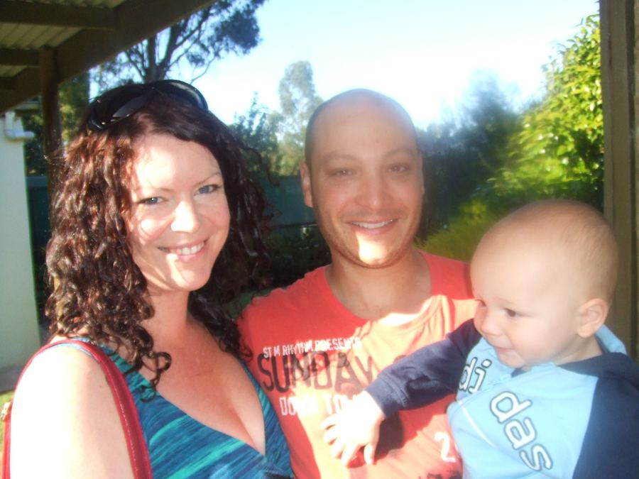

Archies Visit
Welcome Archie
Archie James Keenan and his parents, Cilla and Jim, called in on Friday for a weekend visit. His first trip in a plane , other than when he was in the womb, showed that he was an accomplished traveller and he behaved well on the plane and during the long car trip from Melbourne.
We were getting impatient by the time they arrived and were sitting in the car port facing the road waiting for them. I had put the door down a bit to cut out the wind and glare , a fact which I forgot when I got up and walked forward to greet them impressing a nice negative of the door profile on my bald forehead. Still as nothing happens of importance around here without me walking into something it augured well for the weekend.
We had borrowed a cot from Ron and a high chair from Don but we had to make a bed board for the cot as it had one of those old fashioned wire mattress base.But that done and Archie bathed and fed he was put to bed and we all tucked in to tea....Curry and Roti. I had Cilla's slice for sweets which she had made especially for me, I had to safeguard it from Jim who also likes it.
Saturday Nuran , Jim , Cilla and Archie went to town as Nuran wanted to buy a few things for Archie at Target whilst I stayed home and bottled home brew and baby sat Banjo .
.
 A baby alters routines to suit its wants so tea was after Archie was fed bathed and put down but was timed to perfection, Weber Roasted Lamb and oven roasted vegetables. Archie certainly enjoyed his new cot as he slept right through Grandpas many noises the whole time he was here. Even putting empty bottles in the recycle bin had his mum and dad on edge but didn't worry Grandpa or Archie (thank goodness).
A baby alters routines to suit its wants so tea was after Archie was fed bathed and put down but was timed to perfection, Weber Roasted Lamb and oven roasted vegetables. Archie certainly enjoyed his new cot as he slept right through Grandpas many noises the whole time he was here. Even putting empty bottles in the recycle bin had his mum and dad on edge but didn't worry Grandpa or Archie (thank goodness).
Sunday was a trip to the Valley Lake and the wildlife park. The park was a disappointment as the only wild life was two emaciated kangaroos who were that buggered they couldn't get out of our way and a few blue wrens. You can see more wildlife on a trip up the Hundred Line at sunset or even a walk up the Bike Track will let you pet horses. 
 But the Valley lake was nice and the ducks plentiful and the duck poo even more so, lucky we didn't want to roll in the grass because that would not have been a nice experience. Some children did go happily tripping up on their run to the lakes edge and came back with green knees and fingernails. Luckily Archie was in his pusher until we could find a clear area that he could crawl on. It was a lovely day and the place was full of barbequing families, the whole place has been turned into a really fun family area since our last visit a decade ago.
But the Valley lake was nice and the ducks plentiful and the duck poo even more so, lucky we didn't want to roll in the grass because that would not have been a nice experience. Some children did go happily tripping up on their run to the lakes edge and came back with green knees and fingernails. Luckily Archie was in his pusher until we could find a clear area that he could crawl on. It was a lovely day and the place was full of barbequing families, the whole place has been turned into a really fun family area since our last visit a decade ago.
Aaron came up for tea and a chat with his long time mate Jim and the evening was a nice sociable one. Aaron is a natural at darts and joined the long list of my vanquishers at his first attempt. Aunty Tara brought some Filouri around, no one makes Filouri as good as Aunty Tara, and I got my revenge on Jim for pinching some of my Cilla slice by pinching some of his Aunty Tara Filouri.
All too soon it was Monday morning and we had to farewell Archie, Jim and Cilla and once again was left with an empty nest.
Archie is a lovely boy giving you a grin in greeting and allowing himself to be picked up happily by all.

 Uncle Kevin rolled all over his lounge playing with him which can be a daunting sight for a young baby but didn't faze Archie at all. And Aunty Tara sat and told him what a good boy he was.
Uncle Kevin rolled all over his lounge playing with him which can be a daunting sight for a young baby but didn't faze Archie at all. And Aunty Tara sat and told him what a good boy he was.
Here's hoping that Archie and Co. can come back to Tarpeena soon. 